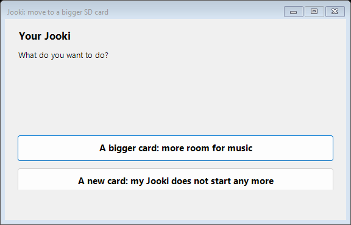
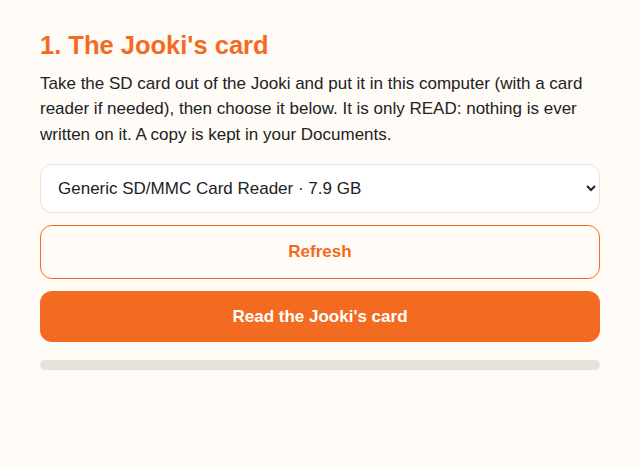

The Jooki's SD card
Out of room for music? Move your Jooki to a bigger card. Jooki dead, card unreadable? Give it a new card, made from scratch. Or go back to the original Jooki. Windows, Mac or Linux, nothing to install.

The first screen asks which one you need. In English or French like your computer.
Download for Windows Download for MacA card reader · about 8 GB free in Documents · Linux: see below
My Jooki no longer starts: a new card
The side dots stay dark, a reset does nothing, and the card taken out of the Jooki is unreadable: the card is dead, and the Jooki is not. Everything it needs to start again is published here, with nothing personal on it.
- Take the dead card out of the Jooki (four screws under it).
- Open the tool and choose A new card: my Jooki does not start any more.
- Put a new micro SD card of 4 GB or more in the computer (8 to 32 GB is ideal), choose it, and confirm it may be erased.
- Wait about ten minutes: the tool downloads the complete card (about 200 MB), checks it, writes it, reads the card back, and gives the music all the room of the card.
- Put the card in the Jooki and switch it on. The first start takes a little longer. Then open its page as after a first install: the library is empty, ready for your music. Your Wi-Fi is remembered by the Jooki's radio chip, not by the card, so it should reconnect by itself.
What exactly is on that card, and how it is built: docs/25-new-sd-card.md.
Back to the original Jooki
The same tool also makes a card with the Jooki exactly as it was sold: its own program of December 2022, without OpenJooki, rebuilt file by file and checked against a Jooki that never had OpenJooki.
- Take the Jooki's card out (four screws under it) and keep it safe: it holds your music and OpenJooki, it is your way back.
- Open the tool and choose The original Jooki: back to the program it was sold with.
- Put a micro SD card of 4 GB or more in the computer, choose it, confirm, wait about ten minutes, then put it in the Jooki.
Good to know: the official app and Jooki's servers are gone, so the original program can no longer be set up from a phone. To come back to OpenJooki, put the Jooki's own card back, or install OpenJooki again. Details: docs/27-original-card.md.
More room for music: a bigger card
- Take the SD card out of the Jooki and put it in the computer.
- Windows: double-click the file and say Yes when Windows asks for permission.
Mac: unzip, then open Jooki SD Card and type your password when asked (the tool needs it to read and write cards). The steps open in your browser. - The tool reads the Jooki's card, then asks for the new one: it copies everything, checks every byte, and gives the music all the space of the new card.
- Put the new card in the Jooki: at the first start it uses all the space by itself.
On a Mac, the first time
The app is not from the App Store, so macOS asks you to confirm once: right-click (or Control-click) Jooki SD Card, choose Open, then Open again. On recent macOS: System Settings → Privacy & Security → Open Anyway. If the Mac offers to install its developer tools, accept: they bring the Python the app uses.

On a Mac or Linux, the same steps in your browser.
On Linux
One Python file: jooki_sd.py,
then sudo python3 jooki_sd.py web (the same steps in your browser) or
list, read, write, new in a terminal.
Nothing to lose
- The Jooki's card is only read, never written: keep it, it is your way back.
- A copy of it is kept in your Documents.
- Only card readers are offered, never your computer's disks, and the new card is confirmed by name and size before it is erased.
- The new-card image is checked twice before a single byte reaches the card, and the card is read back and compared after.
Checked on disk images, including the real layout of a Jooki's card stretched to 32 GB, and on disks attached to Windows, macOS and Linux; the new-card image is checked partition by partition with the Linux reference tools. Cards up to 32 GB are the same kind as the Jooki's own; bigger ones have not been tried in a Jooki yet. How it works: tools/sdcard.